How to use Theory Trainer
Everything the app does, screen by screen: how to sign in, what Today's lesson is, how mock tests work, what your progress numbers mean, and every setting. There's a short part at the end for the parent or admin.
Sign in or create an account
One account covers every learner in your family and every device you use. Your progress is saved to the account, so it follows you from phone to tablet to computer.
Create an account
- Open the app and tap Sign in or create an account.
- Tap Create an account.
- Type your name, your email and a password (at least 6 characters). Show lets you check what you typed.
- Tap Create account. New accounts get an email to confirm the address: open it and tap the link, and you're signed in.
Sign in
Type your email and password and tap Sign in.
Didn't get the confirmation email?
Check your spam folder first. If you try to sign in before confirming, the app says so and shows Send the confirmation email again. The same button appears if an old link has expired.
Forgot your password?
- On the sign-in screen tap Forgot password?
- Type your email and tap Send reset link.
- Open the email and tap the link. The app opens on Set a new password: type a new one and tap Save new password.
Tip: the emails can take a few minutes. If you ask for several in a row, wait a little before trying again.
At the bottom of the sign-in screens are links to Help (this guide), About, Privacy and Terms — each opens in its own tab, so the app keeps its place.
{kind=link}
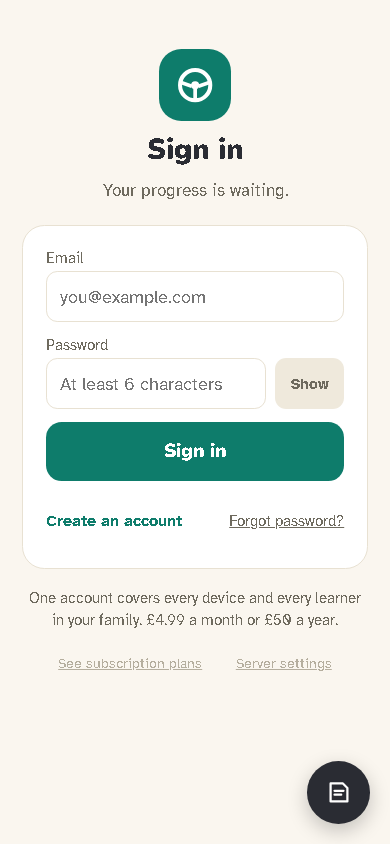
{kind=link}
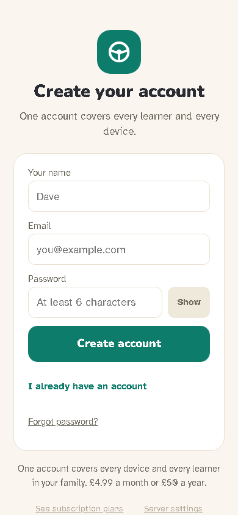
Your year of birth
Right after your first sign-in, the app asks the year you were born. Everyone is asked once, including accounts made before the question existed.
- Type the year and tap Save. Only the year is kept, never the day or month.
- If you may be under 16, a box appears for a parent or guardian: they tick it to agree to you using Theory Trainer, and add their email (not yours). Their email is kept with your account as the record that they agreed.
- Not now puts the question off until you next open the app; it keeps coming back until it's answered.
- You can change the answer any time in Settings → Your data.
{kind=link}
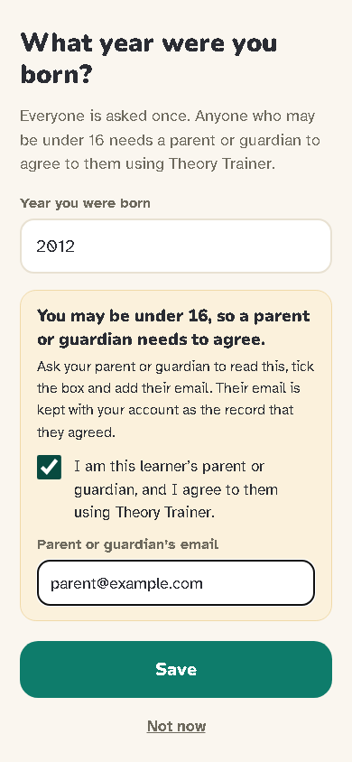
Learners on one account
Each time the app opens it asks Who's here today? Tap your name to start. Every learner has their own answers, streak, flags, notes and settings.
- Add a learner: tap + Add another learner and type their name. You can also do this at the bottom of Settings.
- Switch learner: come back to this screen (reopen the app, or tap Switch learner where it's shown) and tap another name.
- Admin: the second button opens the parent's dashboard (see the admin dashboard).
- Sign out: near the bottom of this screen, under the line that says which email you're signed in with.
- Help, About, Privacy, Terms: links at the very bottom, each opening in its own tab.
Names can be changed any time in Settings → Profiles, and a profile photo added in Settings → My profile.
{kind=link}
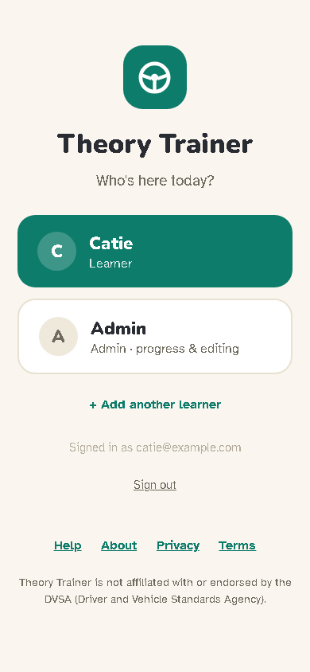
Quick setup
The first time a new learner opens the app, it asks three quick questions, one per screen:
- When is your theory test? Home counts down the days. Not booked yet? Leave it blank and add it later in Settings.
- How many questions a day? 10, 20 or 30. Reach it and your streak grows by a day.
- When should we remind you? 8am, Midday, 5pm or 8pm — or No reminders. Picking a time switches the daily reminder on, and your phone may ask to allow notifications.
Next and Back move between the questions; Done — let's go finishes. Skip stops at any point and keeps whatever you'd already picked. Either way it won't open by itself again.
Every answer is an ordinary setting, so you can change it any time in Settings, or go through all three again with Settings → Quick setup → Run it again.
On a new phone? The quick setup waits until your progress has come down from your account, so someone who has used the app before isn't asked again.
{kind=link}
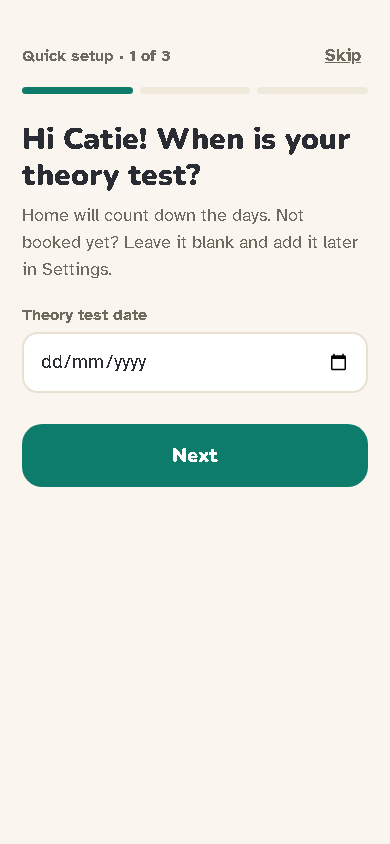
{kind=link}
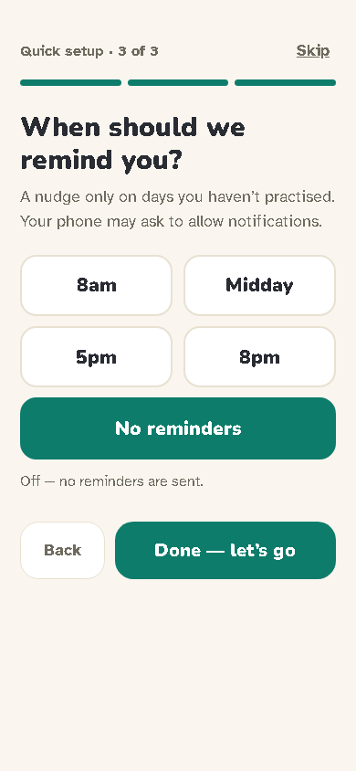
Home
Home is where every part of the app starts. From the top:
- Day streak — how many days in a row you've reached your daily goal. Under it, the streak freezes you hold: miss a day and a freeze saves your streak; with none, it starts again. Tap it to see how freezes work. More below.
- Today's goal — questions answered today out of your goal (10, 20 or 30; change it in Settings).
- XP and level — you earn 10 XP for every right answer and 50 more for passing a mock test. Every 500 XP is a new level, from Provisional up to Full Licence. Tap the level bar to see your badges.
- Close to a badge — once you're most of the way to a badge, the level card says what's left, for example "2 more right answers in a row earns Ten in a row".
- Countdown — if you've set your theory test date, Home shows the days left and how many questions today's plan asks. Tap it for your study plan.
- Today's lesson — the best thing to do next, built from your answers. More below.
- Adventure — the topics as worlds on a map, with the world you're on and the stars you've earned. More below.
- What to work on — the topic where more right answers would lift your mock score most, with a button to drill it. More below.
- Keeps tripping you up — appears once there are questions you keep getting wrong. More below.
- Family board — only if you switch it on in Settings. More below.
Then the buttons for everything else: Practise, Focus Drill, My answers, Flagged, Mock Test, Road Signs, My Progress and Print. At the very bottom, Settings and Help, which opens this guide in its own tab.
{kind=link}
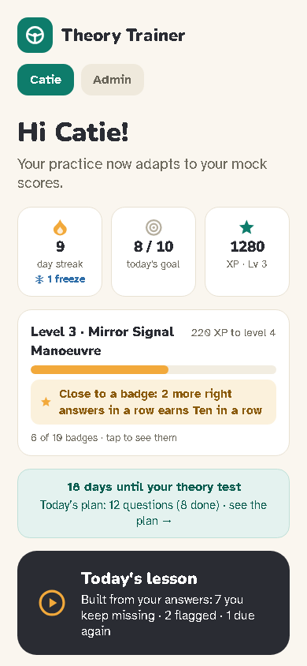
{kind=link}
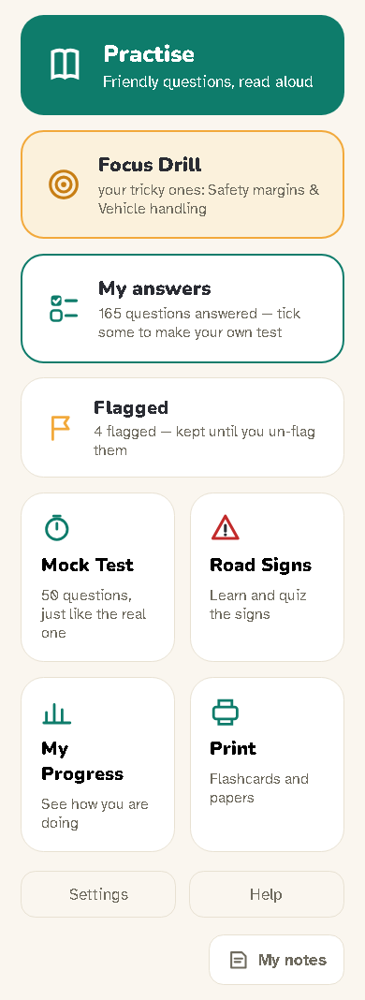
What's new
After the app has been updated, a What's new card appears at the top of Home with a few lines about what changed. Tap Got it and it goes away until the next update.
It's only shown to learners who used the app before that update — not on your very first day, and not on the admin's dashboard.
{kind=link}
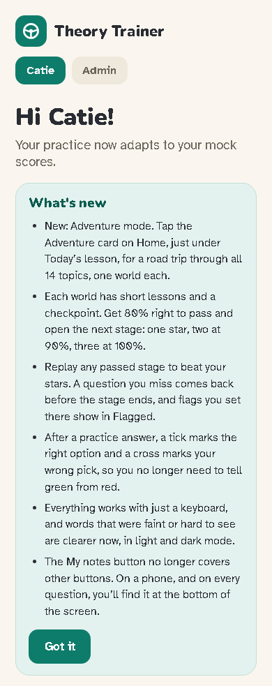
Streak freezes
A day counts towards your streak when you reach your daily goal. Every 7 days you reach it earns a streak freeze, and you can hold 2 at a time. If you miss a day, a freeze is used up instead and your streak carries on (it doesn't grow that day). With no freeze left, a missed day starts the streak again.
Tap the streak on Home to see how many freezes you have, how many more goal days earn the next one, and which days a freeze saved. Today never breaks your streak while it's still today.
Days count by your own clock. A day you reach your goal stays counted even if you raise your goal later.
{kind=link}
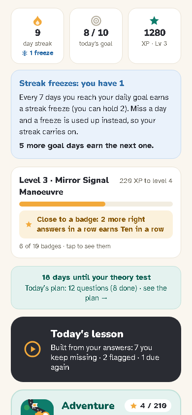
What to work on
Once you've answered some questions, this card names the topic where more right answers would lift your expected mock score the most, in words like: "You lose about 3 of the 4 marks on Safety margins in a mock — about 10 more right answers here would add ~1.2 to your expected score."
Tap Drill <topic> now for a short drill on that topic: questions you keep missing first, then flagged ones, ones due again, then new ones. A question you get wrong comes round again. Underneath, After that names the next topic with its own button.
Until you've answered 50 questions the card says it's early days: with only a few answers the numbers can swing a lot.
{kind=link}
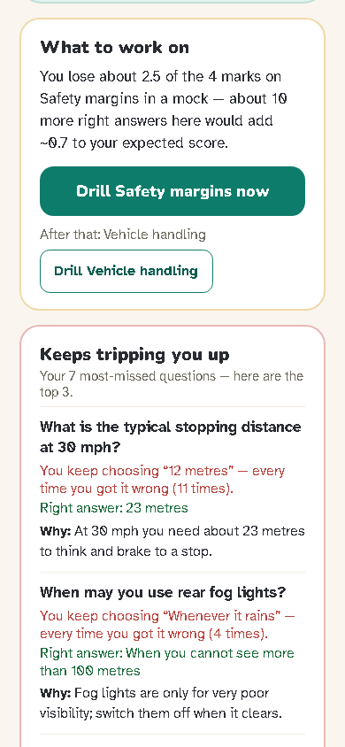
Today's lesson
If you only do one thing today, tap Today's lesson. The app looks at every answer you've given and builds a short drill (between 10 and 20 questions, depending on your daily goal) in this order:
- Questions you keep missing — ones you've got wrong 3 or more times, or on 2 different days. They stay in this group until you get them right twice running.
- Questions you flagged.
- Questions due again — spaced out so they come back just as you might forget: after 1 right answer in a row, 1 day later; then 3 days, 7 days, 14 days and 30 days.
- A few new ones — at most 4 questions you haven't seen before, unless there's little to review: then the lesson fills up with new ones, so your very first lesson is all new questions.
Topics are mixed up rather than done in blocks, and if you get a question wrong in the lesson it comes back 3 questions later (at most twice), so you leave having got it right.
The line under the button says what's in today's lesson, for example "3 you keep missing · 4 flagged · 13 due again". Before you've answered any questions it says "Your first 20 questions, to get you started" (the number is the lesson's size).
Only real questions. The lesson only ever picks and orders questions from the app's question bank. It never writes a question or an answer of its own.
{kind=link}
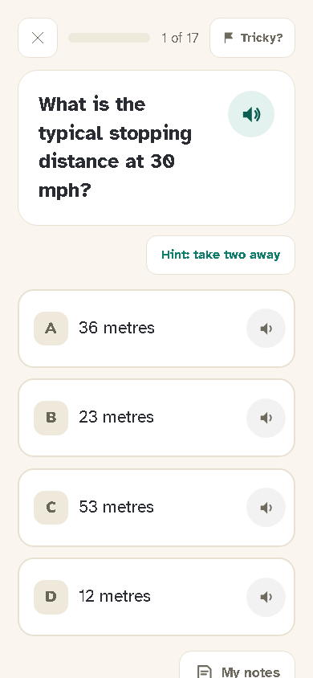
Adventure mode
Adventure mode is another way to learn: the topics become a road trip. Tap the Adventure card on Home, just under Today's lesson. It opens its own page and plays as the learner chosen in the app, with the same questions. Tap Theory Trainer at the top to go back.
- Worlds. There is one world for each of the 14 theory test topics, in the usual topic order, starting with Alertness. Each world is drawn as a winding road with its stages on it. The arrows and the numbered circles move between worlds.
- Sign worlds. After the topics come worlds 15 to 22: one for each category of Road signs, in the same order (Signs giving orders first, Vehicle markings last). Their circles are the second row, marked Signs. They are a road of their own: the first sign world is open from the start, so you don't have to finish the topics first. Their questions are the Road Signs quiz questions: an official picture, and the Highway Code's own captions as the answers.
- Stages. The round stops are lessons of 7 questions (the last lesson in a world can be a little shorter or longer). The flag at the end of the road is the world's checkpoint: 10 questions picked from across the whole world.
- How stages unlock. At the start only the first stage of the topics and the first stage of the sign worlds are open. Pass a stage and the next one opens; pass a world's checkpoint and the next world opens. Locked stages are grey with a padlock and say what to pass first. The stage you're up to has the little car on it and says Start.
- Passing and stars. Get 80% or more right to pass. Stars come with a pass: 1 star at 80%, 2 at 90% and 3 at 100%. Only your first try at each question counts towards the score.
- Replay. Any stage you've passed can be played again. Your best score and your most stars are kept, and a pass stays a pass even if a replay goes worse.
Playing a stage. One question at a time, with a progress bar. After each answer you see straight away whether it was right, with the question's explanation (and its memory tip, once the admin has approved one). You earn 10 XP for each right answer, the same as in the rest of the app, and a counter shows how many you've got right first time in a row. A question you get wrong comes back once before the stage ends, so you finish on a right answer. That second chance doesn't count towards the score or the counter. At the end, Best run is your longest run of right first tries (it shows once you've got 2 in a row). On a keyboard, press 1 to 4 (or A to D) to answer and Enter to go on. The ✕ at the top quits the stage, after asking first.
Flag on a question works like Tricky? in practice: the question goes on your Flagged list in the app and stays there until you take it off. Sign questions have no Flag, as in the Road Signs quiz.
Your Adventure progress, answers and XP are saved with the rest of your progress, and the app sends them to your account the next time it's open (see Offline and syncing). The Adventure card on Home shows the world you're on and your stars.
Goal, streak and your settings. Every answer in Adventure counts towards today's goal and your streak on Home, just like practice (a second chance counts as one more answer, as a repeat does in a drill). Adventure follows your Settings too: text size, the easy-reading font, high contrast, reduce motion, light or dark, and read aloud. Tap the speaker next to the question, an answer or the explanation to hear it in your chosen voice and speed; with Read questions aloud automatically on, each question and your result are read to you. If the app is also open in another tab, that tab shows your new answers, XP and stars straight away, and nothing either tab saves is lost.
Only real questions. Every topic stage is made from the app's question bank, and every sign stage from The Highway Code's own pictures and captions. Adventure mode never writes a question or an answer of its own.
{kind=link}
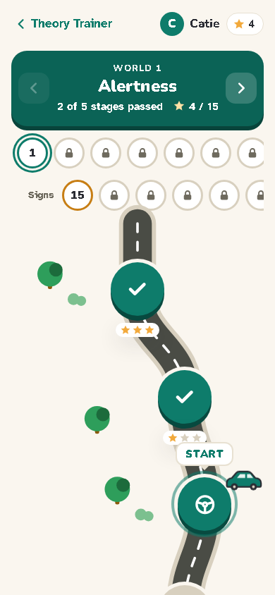
Keeps tripping you up
When there are questions you keep getting wrong, this card appears on Home (and at the end of a practice session). For your top 3 it shows:
- the question,
- You keep choosing — the wrong answer you've picked more than once, and how often (for example "3 of your 4 wrong answers"), which is often the real reason it keeps going wrong. If your latest answer was right it says so, and which wrong answer you used to choose. When your wrong answers were all different, it says how many times you've missed it instead,
- Right answer,
- a Memory tip if one has been approved for that question, or otherwise Why — the question's own explanation.
Tap Drill these to practise exactly those questions now. They also go first in Today's lesson.
Memory tips
A memory tip is a short way to remember one answer. Tips are drafted from the question's own wording by an AI program run by the admin, checked by a program for numbers that aren't in the question, and only shown to you once the admin has read and approved each one (see Memory tips).
{kind=link}
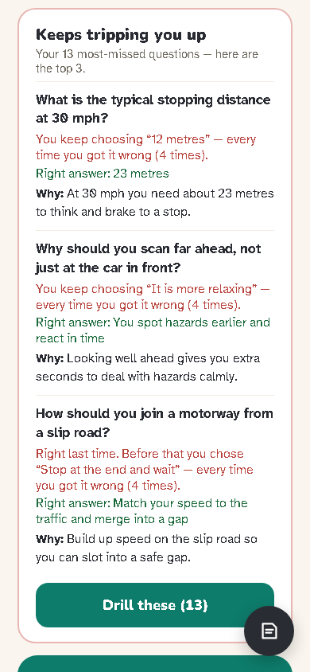
Practise
Answering a question
- Tap an answer. You find out straight away: your pick turns red if it's wrong and the right one turns green. On a computer you can use the keyboard: Tab to an answer, then press Enter or Space.
- Underneath is the explanation and its Highway Code rule, often with a tip to remember it. The speaker button reads the explanation out.
- Explain it differently appears under a wrong answer when the question has a plainer explanation: tap it to read the same explanation in other words (In other words: …), and tap again to hide it. The admin checks every one before it appears, so only some questions have one.
- Speaker buttons read the question, or any one answer, aloud.
- Hint: take two away removes two wrong answers (you can turn this button off in Settings).
- Tricky? at the top flags the question so you can revise it later. It changes to Flagged; tap again to un-flag.
- More questions like this puts similar questions straight after this one.
- Next question moves on (the last one says Finish). ✕ at the top left stops the session.
Every answer also moves the question between three memory boxes: a right answer moves it up a box, a wrong one sends it back to box 1. Questions in the top box count towards your readiness score.
{kind=link}
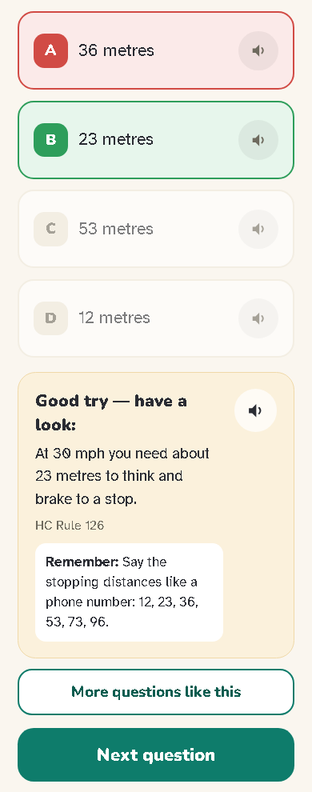
Choosing what to practise
Tap Practise on Home, choose what you want, choose 10, 20 or 30 questions and tap Start.
- My weakest topics — your two weakest topics. After you've done 2 mock tests this becomes Coach's smart mix: all topics, with the ones your mocks show you're weak on coming up more often.
- A bit of everything — all 14 topics mixed.
- Build my own mix — use + and − to choose how many from each topic (up to 20 each).
- Any single topic — each shows how much of it you've got right so far.
Focus Drill
Focus Drill on Home is a quick 20: your flagged questions first, then ones you last got wrong, then your two weakest topics.
At the end
You see your score, any level you've gone up, how you did in each topic, and buttons for More like the ones I missed, Practise your saved ones (your flagged questions), Practise again and Home.
{kind=link}
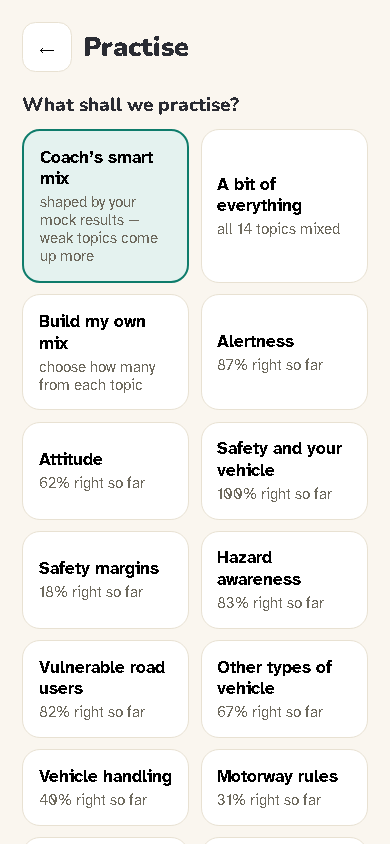
Mock test
A mock test works like the multiple-choice part of the real theory test: 50 questions from every topic, 57 minutes on the clock, and 43 right to pass. You don't find out which answers were right until the end.
Which kind of test?
- Like the real test — an even spread across all 14 topics.
- Surprise mix — 50 picked at random from everything.
- Build your own — choose how many from each topic. The screen shows the number of questions and how many you need to pass (86% of them, rounded up). The timer gives about a minute and 8 seconds a question, with a switch to turn it off.
During the test
- The clock counts down at the top left. When it reaches zero the test ends by itself.
- Flag marks a question to come back to.
- ← Back and Next → move between questions; you can change an answer until you end the test.
- The speaker buttons still work — the real test has a voiceover option too.
- If the app closes, the phone goes flat or you reload, the test is still there when you come back.
{kind=link}
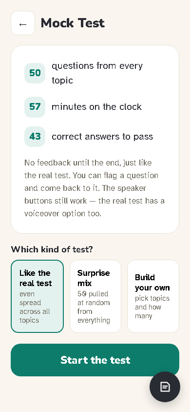
{kind=link}
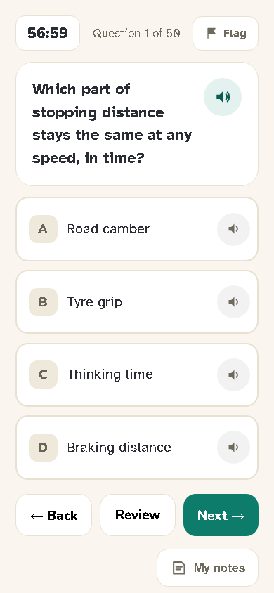
Review, then end the test
Review shows a grid of all 50: filled in if answered, outlined in amber if flagged, blank if not answered. Tap a number to go to it. Keep going goes back to the test; End test marks it.
Your result
- Your score and PASS or not.
- Worth another look — every one you got wrong, with what you picked, the right answer and the explanation. Save for revision flags it; More like this practises similar questions.
- Pick ones to try again (My answers) opens My answers showing the questions you got wrong last time.
- By topic — how you did in each topic.
Any question you flagged during the test is added to your Flagged list, and every answer goes into My answers.
{kind=link}
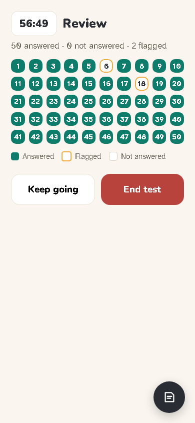
{kind=link}
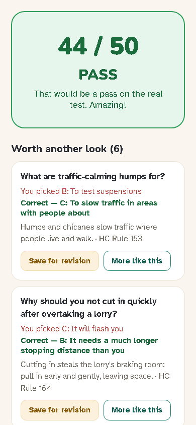
Flagged
Flag a question with Tricky? in practice, Flag in a mock test, or Save for revision on a mock result. It goes on your Flagged list (on Home) with its answer.
- A flag stays until you remove it — getting the question right does not remove it.
- Practise the flagged ones starts a session of just those.
- Un-flag removes one.
- Flags are kept question by question across all your devices: flag something on your phone and it's flagged on your tablet too.
{kind=link}
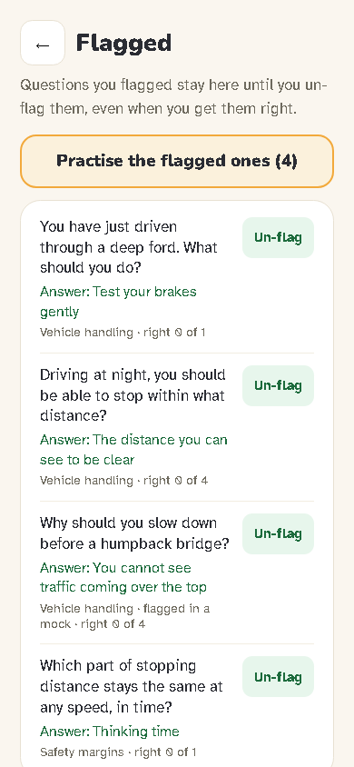
My answers and More like this
My answers lists every question you've answered, in practice and in mocks, newest first: what you said, the right answer, and how often you've got it right and wrong.
- Show All, Wrong last time or Right last time — or Same wrong answer again: the questions where you've picked the same wrong answer more than once. Those rows say which answer and how often, like "You keep choosing “12 metres” — 3 of your 4 wrong answers".
- Tick the questions you want (or Tick all; Clear ticks to start again).
- Then choose from the bar at the bottom:
- Practise them — a practice session of exactly those,
- Make a test — a mock test of exactly those (the Timer for tests switch decides whether it's timed),
- More like these — similar questions you can practise.
How "More like this" chooses
It looks for questions with the most words in common (rarer words count for more), in the same topic, or about the same road sign. It only picks from the question sets that are switched on. You'll find it after any practice answer, on each wrong mock answer, on every row here, and at the end of a session.
{kind=link}
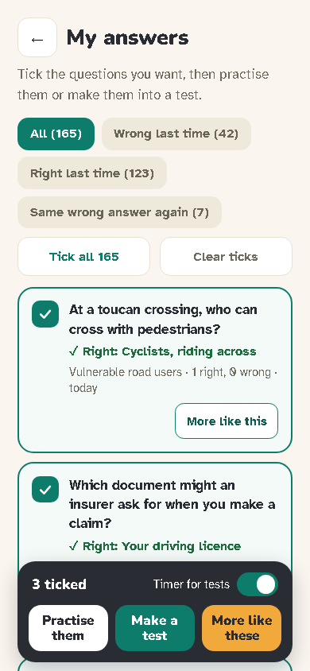
Road signs
Road Signs shows every sign, road marking, light signal and vehicle marking in The Highway Code, each with the official meaning printed under it, in the Highway Code's own order and under its own headings. The pictures are the real ones from GOV.UK. At the end are a few more signs from the Department for Transport.
- Categories. Signs giving orders, Warning signs, Direction signs, Information signs, Road work signs, Road markings, Light signals controlling traffic and Vehicle markings. The buttons at the top show how many pictures each has; tap one to jump straight to it. Back to the categories under each one takes you back up.
- Tap any picture to hear what it means.
- Quiz me on all signs asks 20 signs picked at random from every category. Quiz me on this category, under each heading, asks up to 20 from that category only.
- The questions. Each shows one official picture and asks what it means. The right answer is the Highway Code's own caption for that picture, word for word. The other three answers are captions of other pictures in the same category, so every answer you see is real Highway Code wording. A picture that shows several signs at once is only shown on the screen, never asked about.
- They count. Sign questions count towards today's goal, your streak and your XP, like practice. They are kept apart from the question bank's own records, so they don't change Today's lesson, your readiness, My answers or Flagged, and they have no Tricky? button.
Signs also appear in the bank's questions wherever a question is about one. A question that asks what colour or shape a sign is has no picture, because the picture would give the answer away.
Road sign, road marking, light signal and vehicle marking images: Crown copyright, Department for Transport and The Highway Code. Contains public sector information licensed under the Open Government Licence v3.0. Read the licence.
![The Road Signs screen: a line saying it holds 205 Highway Code pictures and 7 more signs from the Department for Transport, the Quiz me on all signs button, then a button for each category with how many pictures it has: Signs giving orders 47, Warning signs 50, Direction signs 21, Information signs 24, Road work signs 11, Road markings 28, Light signals controlling traffic 14, Vehicle markings 10, and More signs from the Department for Transport 7. The Signs giving orders heading starts below them.](help/img/road-signs.png)
My Progress, levels and badges
How ready are you?
The dial shows a readiness score out of 100 with a label: Keep practising (under 50), Getting there (50 to 74), Nearly ready (75 to 89) or Ready to book! (90 and over).
Once you've done a mock test, the score is made of:
- half: your average score in your last 3 mock tests,
- a quarter: how many of your last 120 practice answers were right,
- 15%: how many of the questions you've seen are in the top memory box,
- 10%: how much of the question bank you've seen.
Before your first mock the score can't go above 60 — a mock is the best evidence, so do one when you feel ready.
Your coach says
A few plain sentences about your last mock, whether your scores are climbing, your weakest topic, and how many questions you haven't seen yet — with a Focus Drill button and a link to My answers.
Your topics
Every topic gets a coloured light, weakest first: Not tried much (fewer than 5 answers), Needs work (under 50% right), Shaky (50–69%), Good (70–84%) or Strong (85% and over). Needs work and Shaky topics show a tip for that topic.
Your mock tests and Worth remembering
A chart of your mock scores against the pass mark of 43, and a few short tips for your weakest topics. The chart starts a little under your lowest score rather than at 0, so your scores are easier to tell apart, and the line under it says where it starts, for example "The chart runs from 30 to 50."
{kind=link}
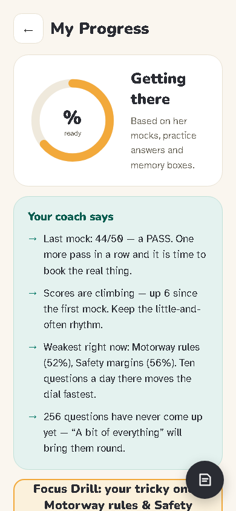
Pass prediction
Under the dial, Pass prediction gives two numbers for one of the app's 50-question mocks (Like the real test, which asks 3 or 4 questions from each topic):
- Expected mock score — out of 50, from how often you get each topic right, with recent answers counting more (an answer 14 days older than your newest counts half as much).
- Chance of 43 or more — how likely a pass is on those rates. It never says 0% or 100%: it shows "under 1%" or "over 99%" instead.
What would raise it is the same sentence as What to work on. The prediction needs 50 answers; before that it says Not enough answers yet and how many more it needs.
An estimate, not a promise. It comes only from your own answers and mock scores in the app. It hasn't been checked against real theory test results.
The Study plan button further down opens your study plan.
{kind=link}
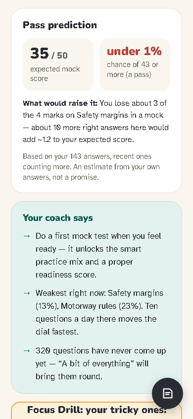
Levels and badges
Tap the level bar on Home to see your level, how much XP to the next one, and 10 badges earned from what you actually do: First go, Ten in a row, Century (100 answered), Five hundred, Week on the trot (7-day streak), Month of practice (30-day streak), Mock passed, Three mocks passed, Topic mastered (85% on a topic after 10 or more answers) and Every topic tried. Badges you haven't earned yet show how close you are, like "6 / 7". The streak badges count your streak as Home shows it, so a day saved by a streak freeze keeps them going.
{kind=link}
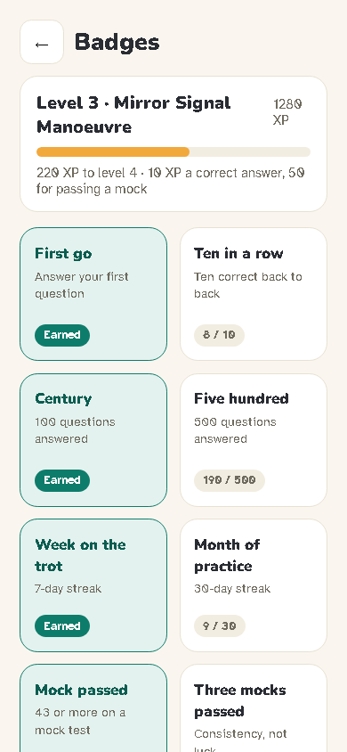
Study plan
Set your theory test date (in the quick setup, Settings, or on this screen) and the app plans every day up to the day before your test. Open it by tapping the countdown on Home, or Study plan on My Progress.
- Today — how many questions today needs, how many you've done, and two focus topics. Practise today's topics now starts a drill on them.
- Missed a day? The plan says which days, and spreads their questions over the days left, so each day asks a little more. It never asks less than your daily goal.
- Why this many — the plan is your daily goal for each day, raised if needed so that every question you haven't seen yet comes up before test day. The line under Today says when that has happened.
- Day by day — the next 14 days, each with its topics and number of questions. The focus topics take turns, starting with the ones that would lift your score most.
The plan is worked out again every time you open it, from your answers so far. Changing your test date starts a fresh plan from that day. On test day it just wishes you luck, and once the date has passed it asks for the next one.
{kind=link}
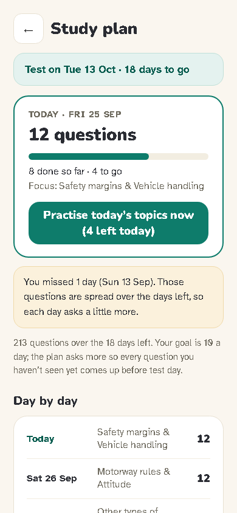
For revising away from a screen. Choose what you want and tap Preview and print. For flashcards you also choose which questions: the whole bank, only ones you've got wrong, or one topic.
- Flashcards — 4 per A4 page, questions on the left and answers on the right. Print single-sided, fold down the middle so each answer sits behind its question, and cut along the dashed lines.
- Test paper — 50 numbered questions across all topics, with the answer key on the last page.
- Full answer book — every question with its right answer, explanation and Highway Code rule.
Printing always uses light colours, even in dark mode.
{kind=link}
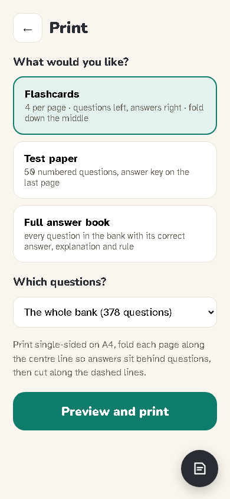
Settings
Tap Settings at the bottom of Home. Each learner has their own settings, except Appearance, which belongs to the device.
- Text size
- Three sizes of A. Makes everything bigger or smaller.
- Appearance
- Match device, Light or Dark. Match device follows your phone's dark mode. Set per device. This guide follows the same choice.
- Read questions aloud automatically
- The voice reads each question and answer as it appears.
- Hint button (50:50)
- Adds the button that takes away two wrong answers.
- Move on by itself
- After a right answer, goes to the next question on its own.
- Easy-reading font
- Switches to a font that is easier to read (Lexend).
- High contrast
- Stronger colours and darker text.
- Reduce motion
- Turns off the little animations.
- Family board
- Off until you switch it on. Adds a card to Home comparing your streak and this week's questions with the other learners on this account who have switched it on too. More below.
- Voice and Voice speed
- Choose which voice reads aloud (the best-sounding ones are marked ★ and the app picks one for you), Slower, Normal or Faster, and Play sample to hear it.
- My profile
- Upload a photo for your profile, or remove it.
- Daily goal
- 10, 20 or 30 questions a day to keep your streak.
- My theory test date
- Shows a countdown on Home and sets up your study plan. A new date starts a fresh plan.
- Daily reminder and Reminder time
- See Daily reminders.
- Quick setup
- Run it again goes back through the quick setup: test date, daily goal and reminder, one at a time.
- Profiles
- Change the learner's and the parent's names, and + Add another learner.
- Your data
- Download everything the server keeps for your account, see or change your year of birth, and delete your account. More below.
- Reset all progress…
- After asking you to confirm, clears this learner's answers, memory boxes and mock scores. Questions the admin added are kept. Flags, XP and streak are not cleared.
- Help and legal
- Help (this guide), About, Privacy and Terms, each in its own tab, and a line saying the app is not affiliated with the DVSA.
Voice sounds robotic? Some browsers only have basic voices. On an iPhone or iPad, open the device's Settings → Accessibility → Spoken Content → Voices → English (UK) and download an Enhanced or Premium voice. It then appears in the app's Voice list, marked ★.
{kind=link}
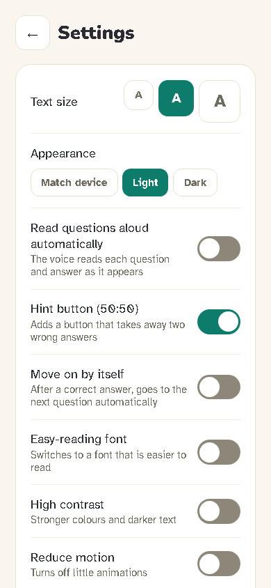
{kind=link}
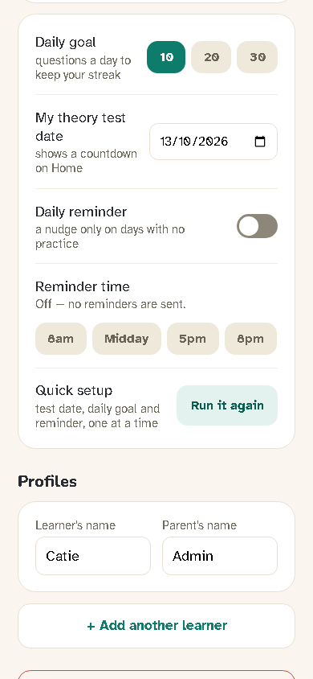
At the bottom of Settings
Quick setup runs the first-open questions again. Help and legal lists this guide and the About, Privacy and Terms pages.
{kind=link}
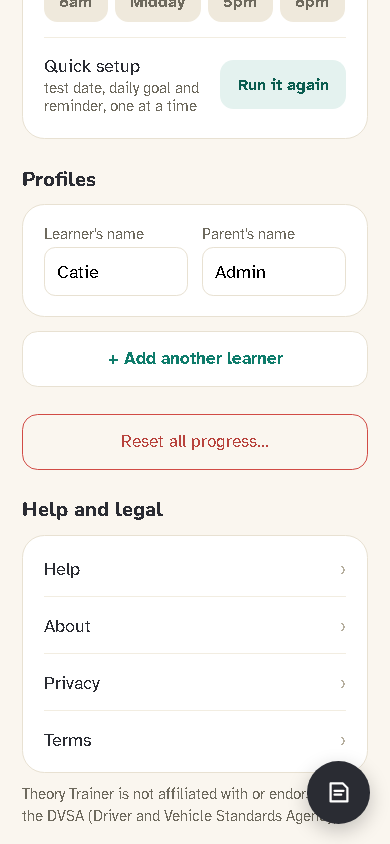
Your data
Near the bottom of Settings, when you're signed in:
- Download my data saves everything the server keeps for your account as one file (JSON, which any text editor opens): your account, your access, the progress backup of every learner, reminder settings and the whole activity history.
- Your age shows the year you gave, and the parent's or guardian's email if one agreed. Change opens the question again.
- Delete my account deletes the account and everything the server keeps for it. Delete… first lists exactly what goes. Then type DELETE and tap Delete my account for good; the button stays grey until you've typed it. This phone or computer forgets the account too: you're signed out and the learners' progress on it is removed. There's no undo, so download your data first if you want a copy.
- A subscription that is still set to renew has to be cancelled first (Manage subscription); the app says so if you try. The admin account can't be deleted here: it shows why instead of the button.
{kind=link}
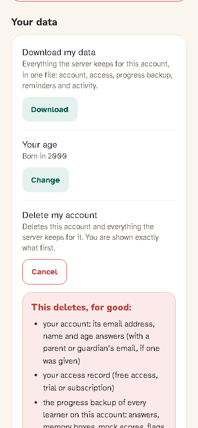
Family board
If more than one learner uses this account, the family board lets you see how you're all getting on. It's off until you switch on Settings → Family board, and each learner decides for themselves: only learners who have switched it on appear, and only they see the board.
For each of them it shows questions this week (since Monday) and their current streak, busiest first, with "(you)" by your name. Until someone else switches it on, it says it's only you so far.
Nothing extra leaves the device. The board is worked out on the phone or tablet from this account's own learners. It never compares you with anyone outside your account.
{kind=link}
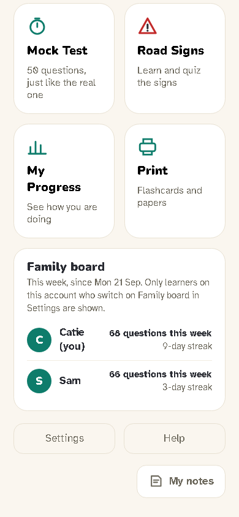
Daily reminders
A reminder is a nudge on days you haven't practised — never on days you have.
- Go to Settings and switch on Daily reminder. Your phone or browser asks if the app may show notifications: say yes.
- Pick a Reminder time: 8am, Midday, 5pm or 8pm, in your own time zone.
The line under Reminder time says what's happening:
- "On — a nudge arrives at the time below…" — reminders are sent to your device even when the app is closed.
- "On for this device…" — reminders from the server aren't set up yet, so the nudge shows only when you open the app after your reminder time on a day you haven't practised.
iPhone and iPad: Apple only lets an app show notifications once it's on the home screen. Add it to your home screen, open it from the icon, then switch the reminder on.
Notes
My notes opens Notes for the screen you're on — for example, a note on Home, or one on the mock test. Just type; it saves as you go. It's on every screen except the sign-in screens and the quick setup.
On a phone, and on every question, the My notes button is at the bottom of the screen, under everything else: scroll down to it. That way it never covers a button. On a wide screen, such as a computer, it is the round dark button in the bottom-right corner, in the space beside the page.
If you have notes on other screens, Also on: lists them so you can jump to one. ✕ closes the notes. Notes belong to each learner and sync with the account.
{kind=link}
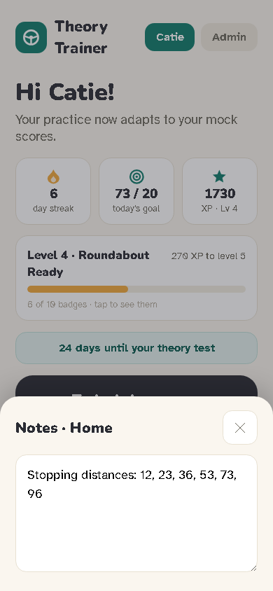
Offline and syncing
- It works offline. Once you've opened the app online, it keeps a copy of itself and of the question bank on the device, so you can practise and take mock tests without signal. A test in progress survives a reload or a flat battery.
- One catch: the app also needs three code libraries from another website (unpkg.com). Your browser normally keeps these in its own cache, but if it has cleared them, the app needs a connection once to fetch them again.
- Syncing is automatic. When you open the app it fetches your latest progress; a few seconds after you answer, it saves back to your account. Answers made offline are sent when the device is online again. There's no sync button to remember.
- Two devices? Progress for each learner is merged, with the newest copy winning; flags are merged question by question, and Adventure progress stage by stage, keeping the best of both (the best score, the most stars, a pass once passed).
- Updates: when a new version of the app arrives, a bar says "Updated — reload for the latest version" with a Reload button. It never reloads by itself, so it can't interrupt a test.
Install on your home screen
Theory Trainer runs in the browser, and can be added to your home screen like an app — full screen, with its own icon, and working offline.
- iPhone or iPad
- Open the app in Safari, tap Share, then Add to Home Screen. Needed for reminders on Apple devices.
- Android
- Open the app in Chrome and choose Install app from the menu.
- Computer
- In a browser that can install web apps, such as Chrome or Edge, click the install icon in the address bar.
Subscription
The full question bank needs access. Card payments aren't switched on yet, so for now the admin gives it (Accounts). Without access, the app shows a lock screen that says so, with:
- Try 20 free questions — a free sample, where it's offered.
- Check my access again — looks again straight away, for example once the admin has given free access.
Once payments are switched on, the lock screen also offers Subscribe (£4.99 a month) or Or … a year (£50 a year) on a page run by Stripe, the payment company; Manage subscription to change the card or plan, or cancel; and I've paid. If a payment fails, the lock screen says so; access comes straight back once it's paid.
Not live yet: card payments. They are switched on in config.js (payments) only once Stripe is set up.
{kind=link}
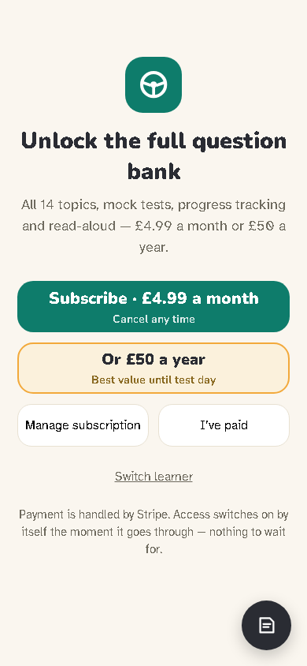
The admin dashboard
For the parent, or whoever helps the learner. Open it with Admin on the Who's here today? screen, or the parent's name at the top of Home. From top to bottom:
- Learner chips (if there's more than one) choose whose progress you're looking at; All time / Last 7 days changes the period.
- Coach summary — the readiness percentage and the coach's advice.
- Topics — weakest first, with a Focus Drill button.
- Mock test scores — tap a test to see it topic by topic. + Log an external mock result lets you type in a score from another mock (for example a Safe Driving for Life or Theory Test Pro mock), with per-topic results if you have them, so everything is in one place.
- Everything she does — links to Activity and to Memory tips and plain explanations.
- Flagged for extra revision and 20 hardest questions (the ones she gets wrong most).
- Question packs, Subscription, Account and Data — see Questions and packs and Access and account tools.
Which parts need an admin account? Activity, Memory tips and uploading the question bank need an account the server knows is the admin. The rest of the dashboard works on the device you're using.
{kind=link}
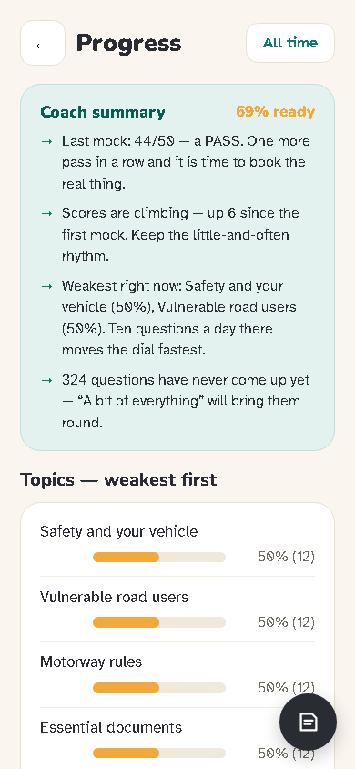
Everything she does
Two links, a count of flagged questions, and the 20 questions she finds hardest, with how many times each was got right and in which topic.
{kind=link}
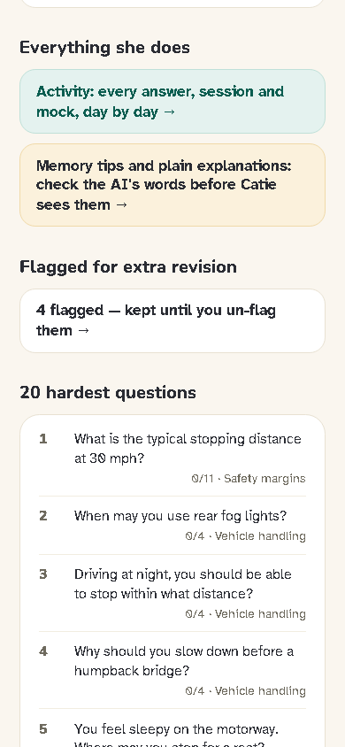
Activity
The app records what each learner does — every answer (and which option was chosen), each question shown, sessions, mock tests, Adventure stages, hints, read-aloud, flags, the screens opened, each Settings change (what it was and what it became, never a name), notes added, changed or deleted (how long, never what they say) and printing (which kind and how many questions) — and keeps it on the server. Activity shows the last 60 days:
- totals: answered, percent right, minutes, days used, hints used, read aloud,
- Day by day,
- Missed most — with the wrong answer she usually picks,
- Time to answer, by topic,
- Latest — the most recent things she did.
Tap Refresh to fetch the newest. When more than one account has activity, chips at the top choose which account to show.
{kind=link}
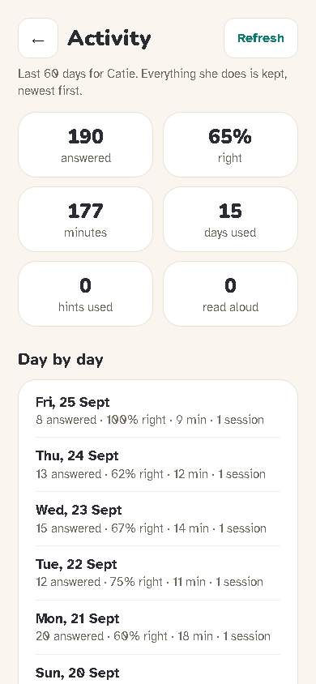
Memory tips and plain explanations
Memory tips, and the plain explanations behind Explain it differently, are drafted on the admin's own computer by a local AI program. A tip uses only its question's own words; a plain explanation uses the question, its right answer and its explanation. A check rejects any draft with a number that isn't in the question. Nothing reaches a learner until it is approved here.
- On the dashboard tap Memory tips and plain explanations: check the AI's words before Catie sees them.
- Choose Memory tips or Plain explanations at the top. Under that, the tabs are To check, Approved and Rejected, each with a count. Up to 50 show at a time.
- Each question is shown with its answer and the draft, which you can edit. A plain explanation also shows In the bank: the question's own explanation, so you can check the new wording says the same thing.
- Tap Approve to make it live, or Reject to hide it. The status says Live for Catie, Hidden or Not shown yet. On an approved tip the button says Save, for saving an edit.
- On the To check tab, Approve all … shown approves everything on the screen at once, after asking you to confirm.
Questions and packs
Question packs
The questions come in sets. Each set has two switches: Practise and Tests, so a set can be used for one and not the other. Load a question pack (JSON file)… adds a set you've written or have a licence for; it uses the same fields as the exported bank (question, four options, correctIndex, explanation, ruleRef, topic 1–14).
Question editor
Dashboard → Data → Edit questions. Choose a topic or search all questions, tap one to change its wording, options (tap ✓ to mark the right one), explanation, rule reference or sign picture, then Save. + Add a question to this topic adds your own; Delete removes one. Export bank downloads all the questions as a file.
Worth knowing: edits are saved in this account's own copy, not in the shared question bank on the server, so other accounts don't see them.
{kind=link}
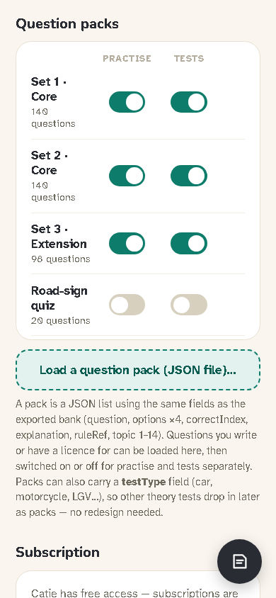
{kind=link}
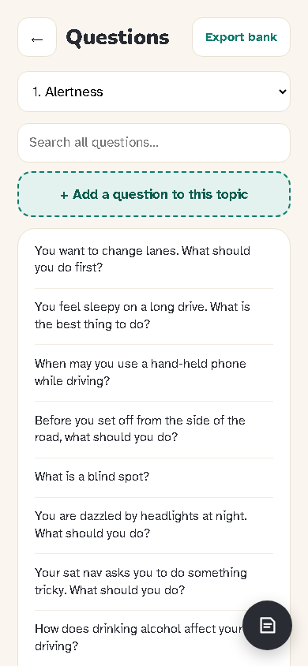
Access and account tools
Accounts
Every account that has signed up, with its access: admin, free for good, free until a day, pays by subscription, or no access (the free sample only). Free for good, Free until that day (pick the last day in the calendar first; that day is included) and Take free access away change it straight away on the server, so it works on that person's own phone too. Refresh reloads the list. Only the admin account sees it.
On this device: access for a learner
Under Subscription, On this device: access for … sets how the learner shown at the top gets in on this phone or computer only:
- Default — a subscription is needed as normal.
- Always free or Free until… a date — for family and testers.
- Suspended or Blocked — locks the learner out until you change it back.
Show me the subscribe screen previews what a learner without access sees. Paying subscribers need nothing here.
Account
Shows who is signed in and their access, with Sync now and Sign out (plus Manage subscription and I've paid once payments are switched on, for accounts that pay). An admin account also sees Upload question bank to server and Server settings (the one-time link to the database; learners never need it).
Data
Export backup downloads a file with this learner's settings, memory boxes, answers and mock tests, plus any question edits. Import backup loads one back. (For everything the server keeps for the account, use Settings → Your data → Download my data.) Edit questions and Print open those screens.
{kind=link}
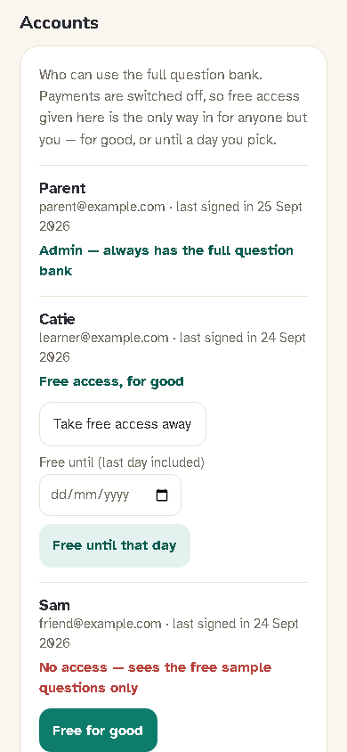
?Questions people ask
Are these the real DVSA theory test questions?
No. The DVSA's own question bank is licensed and not published. Theory Trainer has 378 original questions in the same multiple-choice format, across the same 14 topics, each with an explanation and a Highway Code reference. The admin can load sets that you write yourself or have a licence for.
Does it cover hazard perception?
No. Hazard perception is the second part of the real test and uses video clips; the app doesn't have it. The app covers the multiple-choice part.
How do I get a copy of my data, or delete my account?
In Settings → Your data. Download my data saves everything the server keeps for your account as one file. Delete my account lists exactly what will be deleted and asks you to type DELETE first. If your subscription is still set to renew, cancel it first with Manage subscription.
Why does the app ask the year I was born?
Anyone who may be under 16 needs a parent or guardian to agree to them using the app. Only the year is kept, never the day or month. See Your year of birth.
Can the whole family use one account?
Yes. One account covers every learner and every device. Each learner has their own progress; add learners on the Who's here today? screen or in Settings.
Will my progress follow me to another phone or computer?
Yes, as long as you sign in with the same account. It syncs by itself — see Offline and syncing.
What if I lose signal in the middle of a mock test?
Carry on. The app works offline once it has been opened online, and a test in progress is saved on the device, so it survives a reload or a flat battery. Your answers sync when you're back online.
Does getting a flagged question right remove the flag?
No. Flags stay until you tap Un-flag, so you decide when you know it.
How is the "ready" score worked out?
Mostly from your last 3 mock tests, then your recent practice answers, how many questions are in the top memory box, and how much of the bank you've seen. Before your first mock it can't go above 60. Full details.
How is the mock test marked?
Like the real one: 50 questions, 57 minutes, 43 right to pass. Tests you build yourself need 86% of their questions right, rounded up.
I didn't get the confirmation or password email.
Check spam, and give it a few minutes. On the sign-in screen, Send the confirmation email again appears if the account isn't confirmed yet; Forgot password? sends a new reset link. The app's emails are sent through a service with a limit on how many it sends in an hour, so if you've asked several times, wait before trying again.
Why don't reminders work on my iPhone?
Apple only allows notifications for apps on the home screen. Add it to your home screen, open it from the icon, and switch the reminder on there.
Why does the voice sound robotic?
The app uses your device's own voices. Some browsers only have basic ones. On an iPhone or iPad, download an Enhanced English (UK) voice — the steps are in Settings.
How much does it cost?
The app shows £4.99 a month or £50 a year, paid through Stripe. Card payments aren't live yet; for now the admin gives access. See Subscription and the refund policy (draft).
Who can see what I do in the app?
The admin can see your answers and activity in Activity. The app has no adverts and no third-party tracking code. The privacy notice (draft) lists what is stored and where.
How do I get a copy of my data, or have it deleted?
A copy: Dashboard → Data → Export backup. Deleting an account and its history isn't a button in the app yet — ask the admin. The privacy notice explains what can be deleted and how.
What does "Reset all progress" delete?
This learner's answers, memory boxes and mock scores, after asking you to confirm. Flags, XP, streak and questions the admin added are kept, and so is the activity history on the server.
iAccuracy and the DVSA
Theory Trainer is not affiliated with, endorsed by or connected to the DVSA (Driver and Vehicle Standards Agency) or any other government body.
The questions, answers and explanations are written for practice and are checked against the Highway Code, but mistakes are possible and rules change. Always check the current Highway Code on GOV.UK — it is the official source. A good score in the app is a sign you're preparing well, not a promise that you'll pass.
Found something wrong? Tell the admin, who can correct the question in the question editor.